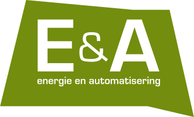
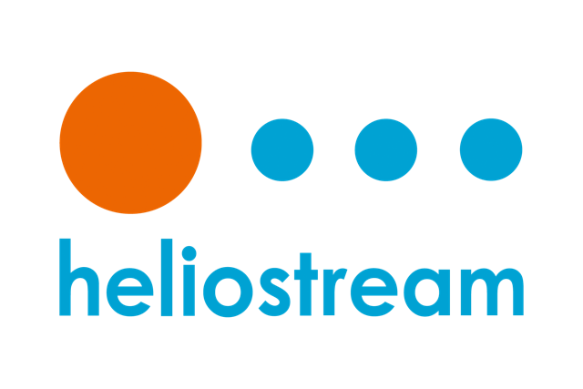
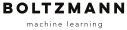
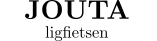
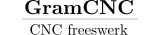
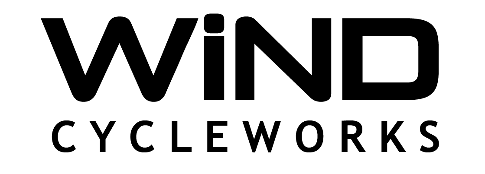
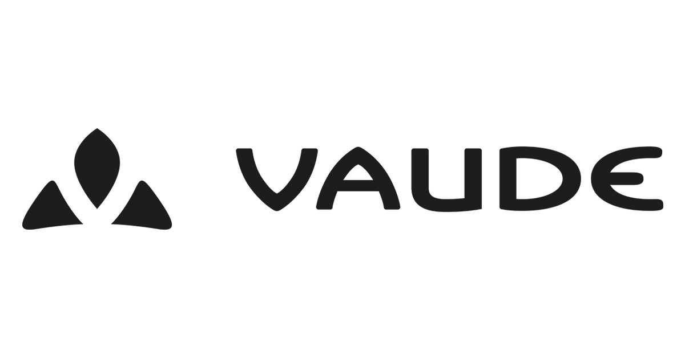

What university is sponsoring a crazy solar bike trip to China? KU LEUVEN knows how to boost creativity and innovation! Check out the website!
What university is sponsoring a crazy solar bike trip to China? KU LEUVEN knows how to boost creativity and innovation! Check out the website!
 Ever since its foundation in 2008 the Energy and Automation research group of KU Leuven Technology campus Ghent has been active in the field of Light Electric Vehicles! Check out our other projects at the website!
 Jan and Tom from Heliostream give meaning to the word enthusiasts and know the PV sector as I haven't seen before. They advised on -and sponsored- the awesome SunPower solar cells, we consider ourselves very lucky to have met them!
 Boltzmann is proud to support the adventure of their team member Camille. What about a self-driving bike for next edition? Check out their website!
 Rudy from Joutaligfietsen sold us the Tridenttrikes Chameleon trike frame at factory price and gave us invaluable advise on the consumption of LED lights. Check out the website!
 Lam from GramCNC is quite a guy, built his own CNC machines, helped us out with the design and creation of our trunk and learned us super glue does wonders on flesh wounds. Check out the website!
 Bart from WiND CYCLEWORKS sure knows how to build and repair frames. He helped us out with our little chainsaw massacre, check out his website!
 Roel from Vaude Store Leuven told us the budget for sponsoring in 2018 is long gone... Then gave us 30% discount on everything, hooray! Check their products at the website!